|
|
| Linux-based gateways, servers, wireless access points |
(Updated Jun. 29, 2005)
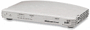3Com Office Connect VPN Firewall and SecureServer -- [Sept. 25, 2004] -- 3Com's OfficeConnect SecureRouter (3CR860-95) and OfficeConnect VPN Firewall (3CR870-95) are Linux-based VPN routers for the SOHO (small office, home office) market. 3Com offers a free but unsupported Linux-MIPS kernel source tree and cross-compiling toolchain for the devices, making them potentially interesting to embedded Linux hackers. details
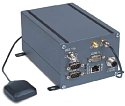Arcom WER-1500 gateway/router -- [Feb. 28, 2005] -- wireless network-gateway and edge-router services to industrial equipment requiring access to enterprise IT systems or the Internet. Intended for use with both fixed and vehicular telemetry and remote-access services, the WER1500 supports Nextel's iDEN network, with 802.11b optionally available. details.
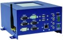Arcom / Ember ZigBee Box -- [Oct. 29, 2004] -- Arcom has partnered with wireless chip-maker Ember on a Linux development kit that aims to integrate ZigBee wireless network data with business applications using IBM WebSphere middleware. The kit includes an XScale-based PC/104 board with ZigBee transceiver, an embedded Linux environment with J2ME, and tools. It targets industrial applications such as pipeline monitoring, automation, and cargo tracking. details
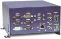Arcom RFID-EC -- [Jan. 12, 2005] -- A compact, rugged embedded Linux system targeting RFID (radio frequency identification) edge controllers. The RFID-EC is based on an XScale PC/104 board running Linux, Java, and an RFID software stack from IBM. A rackmount option is also available, as is a development kit. details
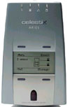Aries integrated server -- [May 16, 2001] -- This compact appliance-like system is designed for easy-to-use resource-sharing and Internet access within small workgroups of up to 50 users. It makes use of laptop-style components and embedded Linux, resulting in reliable, fanless operation and a small enclosure footprint. details
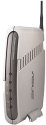Asus WL-300G, WL-500G, and WL-HDD -- [Mar. 15, 2005] -- A family of wireless routers and storage devices that support 54Mbps networking with WPA2 security. Includes an integrated 4-port LAN switch, a USB host interface supporting webcams, hard drives, speakers, and more, along with integrated print serving capabilities. Has 32MB of RAM, low space and energy requirements, and all firmware is available from Asustek as source code under the GPL license. details
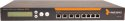Astaro Security Gateway -- [Jun. 24, 2005] -- A line of Linux-powered firewall appliances based on Astaro's Linux distribution for enterprise firewalls and VPN routers. The Astaro Security Gateway family includes three models that support between 80 and 420 Mbps of firewalling throughput, and 26 to 270 Mbps of VPN throughput. details
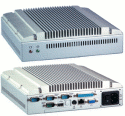Axiomtek eBox -- [May 5, 2005] -- Axiomtek has expanded its line of rugged, fanless computers with additional processor options and extended temperature versions. The eBOX series of computers are packaged in heavy-duty, aluminum and stainless steel housings and support both run Linux. Details
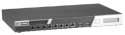Axiomtek NA-1801 -- [Apr. 13, 2005] -- An off-the-shelf network appliance based primarily on Intel silicon, the NA-1801 supports supports Linux, and targets VPN gateways, network bandwidth controllers, SSL appliances, firewalls, and IDS/IPS (intrusion detection/prevention systems). details
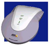Axis Bluetooth "hot spot" -- [May 13, 2000] -- This device is a network appliance that generates local "cells" which extend the range of Bluetooth signals for access by client devices like PDAs, laptops, Webpads, and specialized embedded devices. The device is based on the Axis ETRAX 32-bit RISC system-on-chip processor, equipped with 16MB DRAM and 2MB Flash memory, a built-in Bluetooth transceiver, and a 100 Mbit Ethernet interface. The device's embedded software consists of Axis' ETRAX uClinux port along with an Axis-developed Bluetooth Linux stack, plus a built-in webserver for easy web-based installation and maintenance. details
BlueCat Networks Adonis 500 -- [Apr. 11, 2005] -- A dedicated DHCP server that aims to bring increased availability, reliability, and manageability to enterprise VoIP (voice-over-IP) environments. The Adonis 500 DHCP server is available in standard and embedded versions, and includes Java-based management software. details
 BlueLAN -- [Aug. 7, 2001] -- This Linux-based compact device serves as a miniature gateway to allow wireless Bluetooth devices to access Local Area Networks. Its embedded computer is based on a NetSilicon system-on-chip processor running uClinux. details BlueLAN -- [Aug. 7, 2001] -- This Linux-based compact device serves as a miniature gateway to allow wireless Bluetooth devices to access Local Area Networks. Its embedded computer is based on a NetSilicon system-on-chip processor running uClinux. details
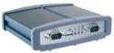Botech Hubit -- [Mar. 20, 2003] -- This small Linux-based "black box" device resides on the web and interfaces to various industrial field buses, allowing remote web-based supervision of building automation and industrial processes. It displays automation and control system data and allows changes to systems via a Java-enabled browser. details
 briQ -- [Jul. 21, 2001] -- With its built-in Ethernet LAN interface and front-mounted 2 x 24 character display and control pushbuttons, the briQ implements a completely self-contained Linux system in the space of a disk drive. Typical uses include industrial and embedded computing systems, network appliances, miniature webservers, and firewalls. details briQ -- [Jul. 21, 2001] -- With its built-in Ethernet LAN interface and front-mounted 2 x 24 character display and control pushbuttons, the briQ implements a completely self-contained Linux system in the space of a disk drive. Typical uses include industrial and embedded computing systems, network appliances, miniature webservers, and firewalls. details
Capricorn PetaBox -- [Jun. 23, 2005] -- A scalable JBOD (just a bunch of disks) storage array based on Via mini-ITX boards running Debian or Fedora Linux. Used by the Internet Archive for its Wayback Machine project. details
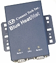Connect Tech Blue Heat/Net -- [Jun. 16, 2005] -- A compact, intelligent Ethernet-to-serial interface based on uClinux, the Blue Heat/Net devices enable remote monitoring of a wide range of serial-interfaced equipment over the Web or on a local network, without requiring a dedicated PC. Details
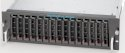Coraid Etherdrive SATA -- [May 9, 2005] -- A SATA (serial ATA) compatible version of Coraid's inexpensive SAN (storage attached network) device for Linux and BSD servers, the EtherDrive SATA uses ATA-over-Ethernet (AoE), an open protocol developed by Coraid and merged into the Linux kernel in January. Details
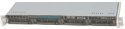Coraid 1U EtherDrive -- [Jun. 23, 2005] -- A smaller version of Coraid's innovative EtherDrive SAN (storage-attached network) device for Linux servers, the 1U EtherDrive uses the open ATA-over-Ethernet (AoE) protocol, supports up to four user-installed SATA disks, and can be set up in a variety of RAID configurations. Details
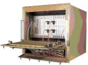CSP FastCluster 220R -- [Dec. 20, 2005] -- A ruggedized, embedded Linux-based COTS (commercial off-the-shelf) cluster system said to meet MIL specifications for harsh- and confined-environment C4ISR applications (command, control, communications, computers, intelligence, surveillance and reconnaissance), including shipboard, airborne, and land-mobile platforms. details
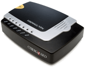CyberGuard/SnapGear uClinux based firewalls and routers -- [May 20, 2004] -- CyberGuard, which acquired SnapGear in November, 2003, has re-branded SnapGear's uClinux-based network security products as the "SG series." The company has also launched three updated Linux based SG-series devices, including a firewall/switch combination for the small office/home office (SOHO) market, and two internal PCI-card based firewalls. details
Cyclades TS100 -- [May 1, 2002] -- This tiny "device server" system is based on the combination of a Motorola dual-core (PowerPC + RISC) system-on-chip processor and an Embedded Linux OS. Typical applications include industrial automation and control, out-of-band network management, retail automation, and connecting various types of serially-interfaced devices to networks. details
DexDyne Netrix -- [Mar. 11, 2005] -- A Linux-based controller and system for remote access to industrial plants and equipment over the Internet, using wireless communications such as GPRS. details.
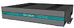Digital GLU Glaucus -- [Feb. 16, 2005] -- A multipurpose appliance based on a 1 GHz Via Eden processor and Point Clark Networks Linux Appliance Software. details
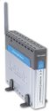D-Link DSL-G604T -- [Nov. 23, 2004] -- A MIPS-based ADSL router with a built-in four-port switch and wireless 802.11g/b radio. The DSL-G604T supports "all major ISPs," D-Link says, and has been marketed primarily in Australia, Great Britain, and Russia. D-Link has released the source code, under the GNU GPL license. details
Ecutel Viatores NXG-100 and NXG-500 -- [Apr. 15, 2005] -- VPN server appliances based on Ecutel's Viatores software, the NxG Linux Appliances enable mobile users to roam seamlessly between networks, while preserving network security and enterprise application sessions, Ecutel says. Details
EmergeCore IT-100 and IT-500 SMB servers -- [Jul. 13, 2004] -- EmergeCore has used Linux in a line of $1395-$2450 office servers for small-medium businesses (SMBs). The IT-100 and IT-500 are easy-to-use, Slackware-based, all-in-one network server appliances with low power requirements and several sophisticated networking options, including WAN cards and multi-domain web hosting. details
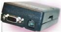emWare DeviceGate-E -- [Nov. 1, 2001] -- A highly compact yet fully functioning Linux-based gateway for specialized applications. Contains either a 486 or PowerPC processor, with 16 MB system RAM and a 16MB DiskOnChip solid state disk, plus interfaces for Ethernet and RS232/485 serial. One example application of this device is remotely monitoring industrial pump controllers to help maintain water quality in water treatment plants. details
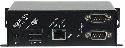Equinox serial-to-LAN adapter -- [Jan. 31, 2003] -- The ESP-2 MI is a compact, 2-port serial hub that offers IP-based LAN connectivity to systems and devices which have serial ports, but lack direct network interfaces. The device is based on an embedded Motorola Coldfire microprocessor running uClinux. details
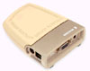Ericsson Bluetooth "blip" -- [Mar. 22, 2002] -- The "blip" is a small self-contained device that communicates wirelessly with mobile phones, PDAs, and other kinds of mobile devices that are equipped with Bluetooth short-range wireless technology. It's meant for use in shopping centers, airports, railway and bus stations, and other public places. details
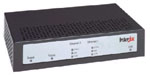Filanet intelligent Internet service appliance -- [Jan. 29, 2001] -- The InterJak 100 is a low cost and easily installed appliance-like device that offers the functions of a plug-and-play Internet gateway, VPN/firewall, email server, and file sharing, and includes tools for remote system monitoring and management. The embedded computer, which runs uCLinux, is based on a custom system-on-chip processor which integrates a 32-bit ARM 940T core processor, two USB ports, two 10/100 Ethernet ports, and an IEEE-1394 (FireWire) interface. Memory consists of 64MB SDRAM, plus 8MB Flash. details
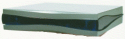i3 Vood Residential Gateway -- [Jun. 11, 2004] -- This small residential gateway provides dual VoIP connections for analog phones, plus simultaneous access to other IP-based services, such as email and the Internet. It supports all types of broadband access networks and communication protocols (H.323, SIP and MGCP), and includes an Ethernet switch supporting remote management of QoS, VLAN tagging, rate limitation. details
Innominate mGuard -- [Sep. 30, 2003] -- Only 0.78 x 2.2 x 3.74 inches in size (board dimensions), mGuard is the worlds smallest security appliance, according to Innominate. Winner of the Wolfsburg prize for industrial design in 2003, it is used in industrial automation in robots or machines and in point of sales applications such as cashdesk systems and automatic tellers. mGuard protects IP (Internet Protocol) communication against attacks from viruses, data espionage, and manipulation, and its open structure makes it easy to integrate it into any industrial product, device, or point of sales system, according to Innominate. details
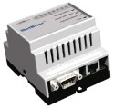Intellicom Netbiter WebSCADA Modbus Gateway -- [Apr. 13, 2005] -- The NetBiter webSCADA Modbus Gateway has been given a "major software update," the company says, that adds support for 200 data points, alarms by email and SMS, and more. Details
Intellicom NetBiter -- [Feb. 28, 2005] -- A uClinux-based network adapter forms the heart of Intellicom's NetBiter family of remote control and monitoring products. The NetBiter Remote Device Management family supports Ethernet, modem, and GSM/GPRS networks, and includes a central management server, and user applications such as Web portals. Details here and here
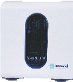Inventel gateway and access points -- [Apr. 1, 2003] -- The DW-B-200 combines the functions of a wireless access point, ADSL modem, router, firewall, and wireless connectivity via both 802.11b, and Bluetooth. The DVW-250 provides gateway services for both telephone and broadband connected Internet, including support for up to five DECT handsets. The DVW-250 can also be converted into a wireless access point by adding an 802.11b, 802.11a, or 802.11g interface via its PC Card expansion slot. details
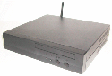IR Data Wireless Zone -- [Feb. 7, 2003] -- This portable wireless uses Linux, Apache, and other open source technologies to creates its own 802.11b wireless (WiFi) hot zone, within which it can deliver web pages, demo's, presentations, and other data to other wireless-enabled devices and systems without requiring Internet access. details
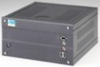Java Systems GNU Remoter -- [Apr. 10, 2005] -- Java Systems used commodity hardware and open source software in an effort to "future proof" its remote sensing computer, it says. The x86-based "GNU Remoter" comes with "mature GNU/Linux" software, and is available with a variety of network transport options, and in basic and rugged versions. Details
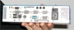Kontron JREX iBox -- [Apr. 15, 2005] -- A small, Pentium-based industrial computer targeting field buses, processor control, firewalls, human-machine interfaces, and embedded applications. The JRex IBOX measures 8.9 x 2.3 x 4.8 inches, and supports embedded Linux, according to the company. Details
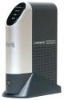Linksys Network Storage Link for USB 2.0 Disk Drives (NSLU2) -- Jul. 9, 2004 -- This small, inexpensive embedded Linux appliance from Linksys turns external USB drives into NAS devices with powerful automatic backup capabilities. details
Linksys WRT54G -- [Sep. 09, 2003] -- This classic Linux wireless router is widely distributed, and hobbyist hackers as well as VoIP entrepreneurs have built custom Linux implementations for it.
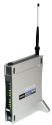Linksys Wireless G WRV54G -- [Oct. 1, 2003] -- The new Linksys Wireless-G router enables sharing a broadband connection and establishing a home or very small business network over Wireless-G (802.11g/54Mbps), or Wireless-B (802.11b/11Mbps) and Ethernet. The device provides 802.1x authorization and authentication, and a RADIUS client. The router and network are configured through a user-friendly web-based management, and the VPN function allows up to 50 remote or traveling users with a VPN endpoint to securely access the office or home network over the Internet. details
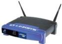Linksys Wireless Presentation Gateway -- [Apr. 29, 2002] -- Using this device, wireless mobile PC users can project presentations and other data onto VGA-equipped devices such as multimedia projectors, monitors, and LCD panels without having to physically wire each PC to the projector. It runs on an Embedded Linux operating system, of course. details
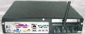LocustWorld MeshAP Pro -- [Sep. 24, 2004] -- The first commercial software product to exploit the cryptographic acceleration engine in newer Via processors, LocustWorld's MeshAP-Pro is a commercial version of MeshAP. It's a mini-ITX based hardware platform for Linux software that creates self-organizing networks of wireless access points. MeshAP-Pro targets larger mesh network operators such as urban service providers. details
MaXXan SG100 Storage Gateway -- [Feb. 27, 2003] -- This Linux-powered storage gateway solution meets the needs of companies' converging NAS (network attached storage) and SAN (storage area network) storage requirements. The device is powered by dual 2.4 GHz Intel Xeon processors, and its internal disk storage is based on IBM micro-drives.details
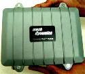Mesh Dynamics Mesh Module -- [Mar. 9, 2005] -- A Linux-based mesh router aimed at VoIP and video, the Module uses multiple radios -- along with custom real-time Linux extensions -- to create a duplexing backhaul network said to improve bandwidth more than 64 times over conventional mesh technology. details.
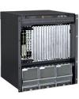Motorola Open Application-Enabling Platforms -- [May 10, 2005] -- Motorola's Open Application-Enabling Platforms target TEMs (telecommunications equipment manufacturers), and are supported under MontaVista Linux Carrier Grade Edition (CGE) throughout product lifecycles, the companies say. MontaVista has an OEM agreement with Motorola, and is the preferred OS provider for the devices. Details
 Moxa Technologies UC-7400 and UC-7420 -- [Jun. 28, 2004] -- the UC-7400 and UC-7420 "Universal Communicators" are serial-to-Ethernet adapters based on secure network processors from Intel. The Communicators come pre-installed with Linux, and enable remote serial devices in factory and building automation systems to be securely monitored and managed over computer networks. details Moxa Technologies UC-7400 and UC-7420 -- [Jun. 28, 2004] -- the UC-7400 and UC-7420 "Universal Communicators" are serial-to-Ethernet adapters based on secure network processors from Intel. The Communicators come pre-installed with Linux, and enable remote serial devices in factory and building automation systems to be securely monitored and managed over computer networks. details
 NetCore Device Server family -- [Oct. 14, 2004] -- NetCore's "NetCore" device servers target building and factory automation, and industrial and camera control. They are based on MIPS32 processors, and include serial and Ethernet interfaces. Several models are available. details NetCore Device Server family -- [Oct. 14, 2004] -- NetCore's "NetCore" device servers target building and factory automation, and industrial and camera control. They are based on MIPS32 processors, and include serial and Ethernet interfaces. Several models are available. details
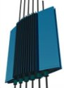Nex G WiMAX base station -- [Jun. 27, 2005] -- Singapore-based Nex G's WiMAX base station uses a Nitrox security processor, and supports up to 16 sectors, the company says. Details
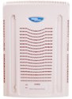Nortel Networks Business Communications Manager (BCM-50) -- [May 17, 2005] -- Nortel Networks is shipping its first Linux-based IP-PBX (IP private branch exchange), according to an article in Computer Business Review Online. The BCM 50 targets small business or satellite offices with three to fifty employees. Nortel will also switch larger IP-PBXs in its Business Communications Manager (BCM) line to the open source OS, the article says. Details
 OpenGear CM4000 KVM server -- [Feb. 14, 2005] -- The CM4000 remote console servers come in 8-, 16-, and 48-port models, and are the first products from Utah-based startup OpenGear, founded by former SnapGear Chief Bob Waldie. The console servers are powered by an ARM-based system-on-chip processor running uClinux, along with software from other open source projects. OpenGear also offers an inexpensive software package that enables schools and other low-budget users to build console servers from old x86 PCs and multiport serial cards. Details here and here OpenGear CM4000 KVM server -- [Feb. 14, 2005] -- The CM4000 remote console servers come in 8-, 16-, and 48-port models, and are the first products from Utah-based startup OpenGear, founded by former SnapGear Chief Bob Waldie. The console servers are powered by an ARM-based system-on-chip processor running uClinux, along with software from other open source projects. OpenGear also offers an inexpensive software package that enables schools and other low-budget users to build console servers from old x86 PCs and multiport serial cards. Details here and here
Peplink Manga -- [Dec. 19, 2004] -- The Peplink Manga (managed adaptive network gateway) is a Linux-powered, ARM-based access device platform offered in a variety of configurations. One configuration supports multiple, load-balanced WAN links, including DSL, cable, T1, and modem links. The device targets businesses and service providers, but at least one user-community has written a Debian-based home networking gateway stack for the device. One of the least power-hungry server appliances ever. Details here and here
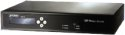Planet SIP-50 VoIP server -- [Jun. 10, 2005] -- A small VoIP proxy server from Taiwanese network equipment company Planet, the SIP-50 is a standalone SIP-compliant proxy server with NAT traversal capabilities that can connect public and private VoIP networks, Planet says. It support 50 concurrent users. Details
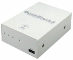Plat'C2 OpenBlockS "micro-server" -- [May 16, 2003] -- This device is described as a "powerful general purpose Linux server that fits in the palm of your hand," that can perform the functions of a firewall/router, mail server, or web server. It's based on a 266MHz IBM PowerPC 405GP embedded processor equipped with 64MB SDRAM and 8MB Flash memory. details
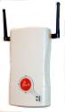Possio PX30 programmable wireless router -- [Mar. 8, 2004] -- The Possio PX30 is a programmable Linux-based wireless router featuring Bluetooth, OSGi (Open Services Gateway Initiative), and Java support. It is an open platform supported by a "Developer Zone" website, and it targets OSGi-enabled network edge devices that integrate diverse kinds of networks. details
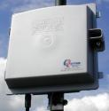Qorvus Qnode+ Mesh Router -- The Qorvus Qnode+ Wireless Mesh Router is a Linux-based 2.4GHz wireless access point and mesh node/repeater suitable for indoor or outdoor use. The $1,000 units are said to be self-configuring and self-healing, and can be distributed through a community to enable pervasive Internet access through a single Internet gateway. details
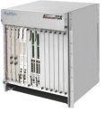Radisys Promentum ATCA servers -- [Apr. 15, 2005] -- RadiSys resells and supports MontaVista and Wind River Carrier Grade Edition (CGE) on its Promentum family of AdvancedTCA (ATCA) products for TEMs (telecom equipment manufacturers). Details here and here
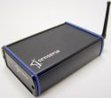Sensoria EnRoute400 -- [Jan. 28, 2005] -- Sensoria used Linux in a wireless mesh router that can bridge civil service radio networks, enabling first responders to communicate at emergency scenes. The EnRoute400 runs a 2.6-series kernel, along with proprietary mesh networking software. It targets emergency response, homeland security, military, and industrial applications. details
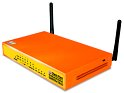SofaWare Safe@Office 400W -- [Feb. 15, 2005] -- An 802.11b/g access point with hardware VPN accelerator chip and tightly integrated firewall and VPN features, the Safe@Office 400W includes a "Super G" wireless networking mode said to support 108 Mbits/s. Details
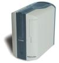Servio "Personal Server" -- [May 8, 2001] -- You have a personal computer, why not a personal server? This easy-to-use Linux-based appliance offers a Swiss Army Knife's worth of solutions to today's wired citizen. Inside, there's an x86 processor with 128MB of RAM, a multi-gigabyte hard disk, plus Linux and a host of other open source software including Apache, Mysql, and the Exim mail server. details
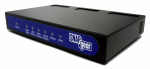SnapGear VPN appliances -- [Jan. 29, 2003] -- This family of VPN appliances combines parsimonious hardware design with uClinux software to provide cost effective solutions for home and small business users. The LITE+ is a VPN router based on a Motorola MCF5272 Coldfire processor, and with a four-port switch on its LAN side; and the SME550 has a SuperH processor plus a dedicated chip that accelerates VPN security functions. product review
Snom VoIP Box IP PBX -- [Feb. 18, 2005] -- a compact Linux-based IP PBX measuring 9 x 8 x 4 cm. Supports up to 50 users in a small- to medium-sized enterprise, providing both a SIP proxy and media server with a full PBX feature set, plus voice messaging, conferencing and other applications. details.
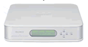Sony HN-RT1 Broadband Audio-Visual Router -- [May 13, 2003] -- This multimedia router connects home computers, media centers, and Sony Playstation 2 game systems to each other and to the Internet, using both wired and wireless connectivity. Additionally, the device enables broadband network gaming, and can be used as a server to share a USB-connected printer. details
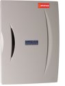Sputnik AP-220 -- [Dec. 10, 2004] -- Sputnik is shipping a new wireless access point (AP) that runs Linux, and works with its carrier-class wireless network management software. The AP 220 is based on uClinux, and targets WISPs (wireless Internet service providers) with hotspots in motels, restaurants, and other public places. details
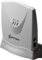Sputnik AP 120 Wireless Access Point -- [Oct. 14, 2003] -- Sputnik is a wireless network management system based on Linux and embedded Linux software combined with commodity PCs and wireless access points (APs). It aims to bring Cisco-class network management and security features to wireless networks, enabling wireless Internet service providers (WISPS), community wireless service providers, educational campuses, and system integrators to centrally manage customer networks. Our Device Profile examines Sputnik's "Central Control" application, its "Sputnik Agent" firmware application, and the company's own uClinux based AP 120 , the first Sputnik-enabled AP on the market. details
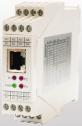SSV IWG/800 and IWG/900 device servers -- [Jul. 15, 2004] -- SSV has used embedded Linux in two device servers for industrial automation. The IGW/800 and IGW/900 can add an Ethernet interface to serial machines in factories, building control systems, and automotive applications, thereby increasing cable lengths and enabling them to send email or be controlled/logged remotely. details
SSV IGW/100 Industrial gateway device -- [Sep. 27, 2004] -- The SSV IGW/100 is a small, rugged industrial security gateway designed to protect automation networks from viruses, worms, and unauthorized access. It runs a free, open-source Linux distribution that supports real-time extensions and was designed especially for industrial security applications. details
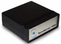SyncServer 1000 -- [Feb. 24, 2003] -- This compact, modem-like Linux appliance integrates "legacy" synchronous Wide Area Networks (WANs) into "modern" IP-based networks. The device allows companies to transparently convert older communications transport protocols (such as X.25, Frame Relay, and SNA) to TCP/IP, giving legacy applications direct access to IP-based LANs, intranets, and the Internet. details
Toshiba Wireless Mobility Server -- [Jun. 12, 2002] -- bout the size of a typical notebook computer, the Magnia SG20 is intended to make it easy to pack up an entire network and take it on the road. The appliance-like device contains a Linux OS derived from Red Hat version 7 along with Apache (which provides web-based administration and application support). details
Win Enterprises PL-01025 -- [May 25, 2005] -- A rack-mountable 1U high embedded development platform optimized for network appliance applications, the PL-01025 incorporates a security coprocessor capable of offloading packet processing for its ten Gigabit and four 10/100 Ethernet ports. Details
Win Enterprises PL-01024 -- [Jun. 7, 2005] -- A 1U-high rack-mountable networking and Internet appliance platform based on a Pentium 4 processor and equipped with a sextuplet of gigabit ethernet ports. The PL-01024 is available with embedded Linux device drivers. Details
Win Enterprises PL-01022 -- [Dec. 13, 2004] -- A 1U rack-mountable embedded platform based on a Pentium 4, with three gigabit and two 10/100 Ethernet ports, the PL-01022 targets OEM networking, Internet appliance, industrial automation, and POS (point of sales/service) applications. details
Wiscore Tenon -- [Jun. 3, 2004] -- This Linux-based device targets consumers interested in running their own Internet server. The Tenon incorporates email, web, and ftp servers, along with a broadband router, hub, and firewall -- all in a small, low-power device featuring an embedded Linux architecture for high security. details
Zultys MX1200 PBX -- [Apr. 2, 2003] -- This "media exchange server" functions as a traditional enterprise telephone PBX (private branch exchange) Internet gateway, switch, and router, and is housed in a single 2U 19-inch rackmount enclosure. It serves from 25 to 1200 users and is based on the combination of four IBM PowerPC 440GP processors equipped with twenty-eight 10/100 Mbps Ethernet ports and eight analog circuits. details
Return to top of guide
 |
|
|
|
|
|
|
|
 Use of this site is governed by our
Terms of Use
and Privacy Policy.
Except where otherwise specified, the contents of this site are copyright © 1999-2005
Ziff Davis Publishing Holdings Inc.
All Rights Reserved. Reproduction in whole or in part without permission is prohibited. Linux is a registered trademark of Linus Torvalds. All other marks are the property of their respective owners.
Use of this site is governed by our
Terms of Use
and Privacy Policy.
Except where otherwise specified, the contents of this site are copyright © 1999-2005
Ziff Davis Publishing Holdings Inc.
All Rights Reserved. Reproduction in whole or in part without permission is prohibited. Linux is a registered trademark of Linus Torvalds. All other marks are the property of their respective owners.


 news feed
news feed